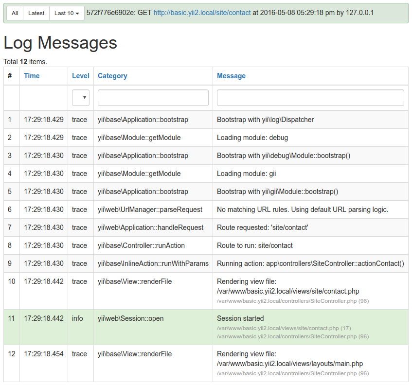

Сегодня поговорим о том:
- Что такое профилирование и зачем им заниматься
- Как и чем собирать профайлы
- Как их смотреть и анализировать
- Распространённые медленные места в коде
- Как поддерживать производительность
Зачем оптимизировать, если и так работает быстро?
Быстро?
А насколько быстро?
Полсекунды - это быстро, или не очень?
«Все в мире относительно»
Альберт Эйнштейн
Зачем пытаться оптимизировать?
- более быстрый отклик
- экономия ресурсов → денег
- больше RPS
Профилирование
— это сбор характеристик работы программы, используемый для анализа ее быстродействия и потребления ресурсов с целью дальнейшей оптимизации
Профайлеры дают возможность оценить:
- где именно
- на какие операции
- в каких объемах
тратятся ресурсы при выполнении программы
Я и так догадываюсь, от чего тупняки.
Ща поправим.
Вряд ли. Оптимизация цельного приложения без профилирования – это догадки и тыканье пальцем в небо.
Какие характеристики могут интересовать?
- время выполнения
- процессорное время
- расход оперативной памяти
- время дисковых операций (IO)
- сетевые операции
- ожидание отклика СУБД*
А как оно работает?
- Профайлер — это программа на C, подключаемая как расширение к PHP
- Запускается по требованию или на каждый запрос, и всё считает
- Записывает подсчитанное в специальной лог профилирования
Чем можно профилировать PHP?
- XDebug
- XHprof
- Blackfire
- Самим PHP
XDebug
Не профайлер.
Отладчик с функцией профилирования
Почему нет?
- огромный overhead (время выполнения программы умножается на 2+)
- оптимизация под XDebug на 90% безрезультатна после его отключения
- нельзя включать на проде
Вы всё еще дебажите принтами?
Must have для отладки
Поддерживается в:
Пошаговая отладка
Stacktrace
Просмотр переменных, доступные в текущей области видимости
Значения можно изменять "на лету"
Linux: ставится из пакетов
apt-get install php-xdebugWindows: подключается DLL как расширение PHP
Всё остальное: собрать из исходников по мануалу
XHprof
Преимущества:
- практически не даёт overhead'а
- можно включать на проде
Недостатки:
- официально не поддерживат PHP 7, но есть форки с поддержкой
- умеет считать только общее время, процессорное время и память, хотя этого обычно достаточно
Linux: из PECL
pecl install xhprof-betaWindows: подключается DLL расширение PHP
Всё остальное: собрать из исходников
wget http://pecl.php.net/get/xhprof-0.9.4.tgz
tar xvf xhprof-0.9.4.tgz
cd xhprof-0.9.4/extension
phpize
./configure --with-php-config=/usr/bin/php-config
make
make install
Как запустить?
Законфижить в php.ini
[xhprof]
extension=xhprof.so
xhprof.output_dir="/tmp/xhprof"
Включить в коде
<?php
xhprof_enable(XHPROF_FLAGS_CPU | XHPROF_FLAGS_MEMORY);
(new Application())->run();
$xhprof_data = xhprof_disable();
xhprof_disable() возвращает массив вызовов
Каждый вызов описан так:
["yii\base\Module::runAction==>yii\base\Controller::runAction"] =>
array(5) {
["ct"] => int(1)
["wt"] => int(6718)
["cpu"] => int(6720)
["mu"] => int(617624)
["pmu"] => int(672904)
}
ct– количество вызовов функцииwt– реальное время выполнения, микросекундcpu– процессорное время, микросекундmu– потребление памяти, байтpmu– пиковое потребление памяти, байт
И чё с этим всем делать?
Сохранять
<?php
xhprof_enable(XHPROF_FLAGS_CPU | XHPROF_FLAGS_MEMORY);
(new Application())->run();
$xhprof_data = xhprof_disable();
$XHPROF_LIB_ROOT = "/opt/xhprof/xhprof_lib";
include_once $XHPROF_LIB_ROOT . "/utils/xhprof_lib.php";
include_once $XHPROF_LIB_ROOT . "/utils/xhprof_runs.php";
$xhprof_runs = new XHProfRuns_Default();
$run_id = $xhprof_runs->save_run($xhprof_data, 'my_application');
Эти PHP файлики можно выкачать из репозитория XHprof и положить в проект, чтобы не зависить от окружения. А еще их можно модифицировать*
А как смотреть?
Берем директории xhprof_lib и xhprof_html из того-же
репозитория,
кладём их рядом, и поднимаем веб-сервер, указывая root в xhprof_html.
Зная ID профайлов, можно сравнить два запуска:
http://xhprof.localhost/index.php?run1=__ID1__&run2=__ID2__
Эм... Как-то не круто
Можно что-то красивенькое?
Конечно! Ставим graphviz:
apt-get install graphviz
Нажимаем на ссылку [View Full Callgraph] на странице просмотра профайла и получаем...
Спокойно! Разбираемся:

- Название класса и метода
- Общее время выполнения с учетом вызовов зависимостей и процент от общего времени выполнения скрипта
- Общее время выполнения без учёта зависимостей и тот же процент
- Колчество обращений к данному методу
Окей, а можно еще информативнее?
Рисовалка собирает блоки на PHP, можно немного поковырять и добавить вывод нужной инфы, вроде CPU или RAM
А что с форком XHprof, который умеет PHP7?
Tideways
- Форк XHprof, все упоминания самого XHprof в коде минимизированы
- Формат данных на 100% совместивый с XHprof
- Активно поддерживается, фиксятся баги и сегфолты, сделана поддержка PHP7
- Ребята пилят свой UI для рисования профайлов
- Профайлы можно легко заливать на их сервис
- Работает на Linux, FreeBSD, Windows, MacOS
- Написали много хороших мануалов
Загрузка профайлов на Tideways
tideways-daemonвыгружает собранные профайлы на tideways.io- можно смотреть на сайте в модном JS-ном UI
- можно добавлять участников в команду и анализировать трейс вместе
- опционально
Как поставить?
На сайте есть мануалы для всех вариантов.
tideways-daemon можно не ставить, если не планируете пользоваться UI
Как запустить?
Законфижить в php.ini
[tideways]
extension=tideways.so
tideways.auto_prepend_library=0
;Закомментировать строку выше, если хотите сливать профайлы на Tideways
Включить в коде
<?php
tideways_enable(TIDEWAYS_FLAGS_CPU | TIDEWAYS_FLAGS_MEMORY | TIDEWAYS_FLAGS_NO_SPANS);
(new Application())->run();
$xhprof_data = tideways_disable();
| xhprof_enable() | → | tideways_enable() |
| xhprof_disable() | → | tideways_disable() |
| XHPROF_FLAGS_CPU | → | TIDEWAYS_FLAGS_CPU |
| XHPROF_FLAGS_* | → | XHPROF_FLAGS_* |
Как сохранять?
Можно локально, форк XHprof же
<?php
tideways_enable(TIDEWAYS_FLAGS_CPU | TIDEWAYS_FLAGS_MEMORY | TIDEWAYS_FLAGS_NO_SPANS);
(new Application())->run();
$xhprof_data = tideways_disable();
include_once '../xhprof/xhprof_lib.php';
include_once '../xhprof/xhprof_runs.php';
$xhprof_runs = new XHProfRuns_Default('/tmp/xhprof');
$run_id = $xhprof_runs->save_run($xhprof_data, 'my_application');
Для работы стандартного просмотрщика профайлов XHprof нужно сделать
ini_set('xhprof.output_dir', '/your/path') или найти в исходниках
создание объекта new XHProfRuns_Default('/your/path') и передать
путь явно
Или выгружать на Tideways
composer require tideways/profiler:*
<?php
\Tideways\Profiler::start(array(
'api_key' => 'YOUR API KEY',
));
(new Application())->run();
Либо настроить автовыгрузку в конфиге PHP или конфиге Apache/Nginx/FPM.
Примеры есть в документации.
И не забыть tideways-daemon
Timeline по категориям
Для подсветки категорий, нужно обернуть код:
<?php
public function foo()
{
$span = \Tideways\Profiler::createSpan('sql');
$span->startTimer();
$span->annotate(array('title' => 'insert users'));
$this->pdo->query('INSERT INTO users (id, name) values (1, "foo")');
$span->stopTimer();
}
Пару слов про UI
- Пока не рисует ни память, ни CPU
- Умеет строить сравнения, как и XHprof
- Есть приложение для Chrome, можно включать профилирование по запросу
- Платный, от 49€/мес. Испытательный период – 30 дней. Тарификация по количеству профайлов

Blackfire
- Начинался как форк XHprof, но был серьезно переделан
- Занимаются ребята из Sensio Labs
- Нет overhead'a
- Можно включать на проде
- Поддерживатеся Linux, FreeBSD, Windows, MacOS
- Работает на PHP 7
- Условно бесплатный. Бесплатно: одно приложение, без сети и SQL. Все возможности стоят от 82,50$/месяц
- Очень толковая документация
Как поставить?
- Очень просто, всё круто описано в мануале
Blackfire состояит из
- Сайта для просмотра графиков
- Расширения PHP
- Агента для отправки данных
- Расширения для Chrome
- Инструментов командной сторки
Включается только по тригеру


Сравнение профайлов
Как я добился ускорения в 10 раз?
Выключил XDebug
У Blackfire есть еще много крутых фишек
- загрузка профайлов XHprof в ручном режиме
- метрики и их тестирование в PHPUnit
- профилирование при билде в Travis, Jenkins
- уведомления на GitHub, Gitlab, Slack, HipChat, e-mail
- Подсчет среднего из N запросов
blackfire --samples 10 run php my-script.php
Научились рисовать красоту, но что с ней делать?
Анализировать!
Что профилировать в первую очередь?
- Инициализация приложения
- Типовые страницы модулей
- То, что долго отдаётся
Что чаще всего тормозит?
- Плохие/сложные алгоритмы
- Вложенные циклы
- Дисковые операции
- Плохие SQL
- Взаимодействие с внешним миром
- Вызовы консольных комманд
- Слишком много объектов (100К+)
Код может взлететь!
Плохие/сложные алгоритмы
- профилировать и улучшать
- искать алтернативные подходы
- кешировать (Memcache, Redis)
Дисковые операции
- Отложенная загрузка (lazy loading)
- SSD
- OpCache
- Memcache, Redis
Плохие SQL
- Оптимизировать запросы (смотреть EXPLAIN)
- Индексы
- Тюнить СУБД
- Не делать сложных запросов
Взаимодействие с внешним миром
- Помним, что всё когда-то упадёт
- Асинхронность
- Очереди (AMQP, RabbitMQ)
Вызовы консольных комманд
- Делать асинхронными
- Минимизировать
- Кешировать
Слишком много объектов (100К+)
- Обычно это не нужно
- Искать более элегантный вариант
Нужно стараться
- избегать божественных методов и классов
- помнить о сложности алгоритмов и операций
- не забывать об архитектуре и чистоте кода
- не заниматься преждевременной оптимизацией
Помощь хороших фреймворков
- Архитектура
- Решения типичных задач
- Вдохновение на хороший код
Как помогает Yii2?
- Отложенная загрузка
- Дебаг-панель
- Модульность
- Переопределяемость компонентов
Пользуйтесь дебаг-панелью
Логи приложения
Логи SQL запросов
Быстрое профилирование по месту
Yii::beginProfile('Checking my new algo');
$system->compute();
Yii::endProfile('Checking my new algo');

Профайлеры на проде
- Используйте тригеры для активации
- Помните, что профайлы занимают место
А еще можно:
- Обновится до PHP 7 (до +40%)
- Потюнить OpCache (не должно быть misses)
- Настроить кеш (Memcache, Redis)
- Apache → nginx + php-fpm
Планы на Yii 2.1
- PHP 5.6
- Отказ от
fxp/composer-asset-plugin - Удаление AssetСompressor'a и переход к Gulp/Grunt
- Переход к SemVer (2.1.x.x)
- Отказ от
::className()в пользу::class - Вынесение
MaskedInput,PJAXиз ядра